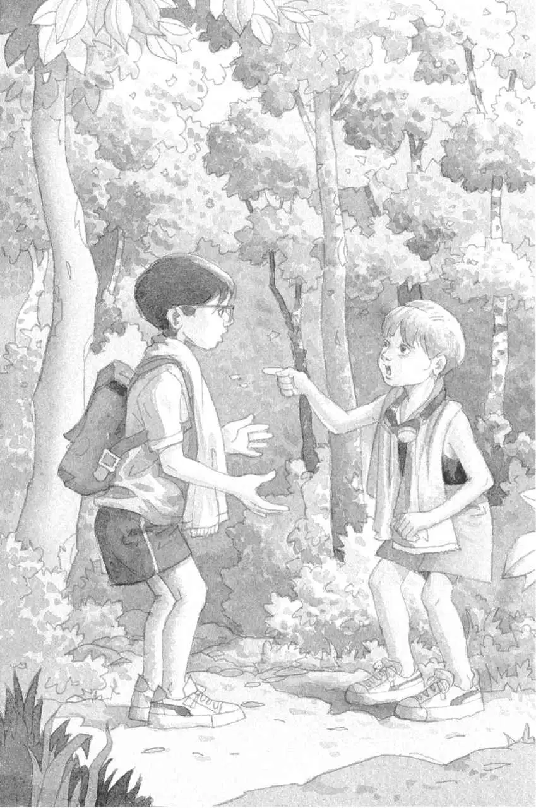
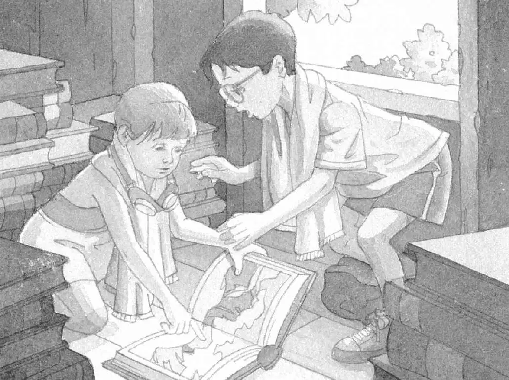

“我们去树屋看看吧。”安妮提议。
她和杰克刚上完游泳课，在回家的路上刚好经过蛙溪树林。
“不，我想回家把泳衣换掉。”杰克说。
“哎呀，那太花时间了。”安妮着急地说，“你不想尽快把仙女摩根救出来吗？”
“当然想啊。”杰克说。
“那就快走吧！别等太阳落山了！”安妮催促道。
她一阵风似的冲进了树林。
杰克叹了口气，只好把换掉泳衣的想法丢到一边。
他把眼镜往上推了推，跟着安妮走进了蛙溪树林。
温暖的空气里，有一股绿色植物的清香。
杰克在斑驳的光影间行走。不一会儿，他便来到了一片小小的林间空地上。
杰克抬头望去。那座神奇的树屋就在树林里最高的那棵橡树上呢。
“快点儿！”安妮喊道。她顺着绳梯往树屋上爬。

杰克抓住绳梯，跟着她一起爬了上去。
终于，他们来到了树屋里。
“吱吱。”一只小老鼠蹲在窗台上。
“你好啊，花生米！”安妮问候道。
杰克拍了拍小老鼠的脑袋。
“对不起，我们来晚了，”安妮说，“可是没办法，我们得去上游泳课。”
“吱吱。”
“我们不在的时候，这里发生过什么事吗？”安妮在树屋里看了一圈问道。
杰克看着刻在地板上的那个大大的字母M。
字母上面，放着一块月光石和一颗杧果。这是他们在最近两次探险旅途中找到的意义非凡的东西。
“嘿，你猜怎么着？”杰克说，“月光石（Moonstone）和杧果（Mango）都是以字母M开头的，就像‘摩根’（Morgan）这个词的开头字母一样。”
“你说得对。”安妮说。
“我敢说，我们要找的四样东西都是以字母M开头的。”杰克断定。
“没错。”安妮说，“不知道下一样东西该去哪儿找。”
她和杰克盯着树屋里的那一堆书。有关于亚马孙热带雨林、忍者、海盗、木乃伊和恐龙的书，也有关于骑士和城堡的书。
那些书都是合上的，只有墙角的一本书是摊开着的。
“我们这就去弄弄清楚。”杰克说。
杰克和安妮朝那本摊开的书走去。
在书翻开的那一页上有一幅图片，图片上画的是岩石和积雪。
“哇！”安妮用手指抚摸着画面说，“我特别喜欢雪，真希望我们立刻就能去那儿。”
“等一等，”杰克说，“我们还没有做好准备呢。”接着他想到了另一件事，“而且我们还穿着泳衣呢！快停下！”
“哎哟！”安妮叫了一声。

已经来不及了。
起风了。
树叶开始颤动。
树屋开始旋转，越转越快。
然后，一切都静止了。
完完全全地静止不动了。